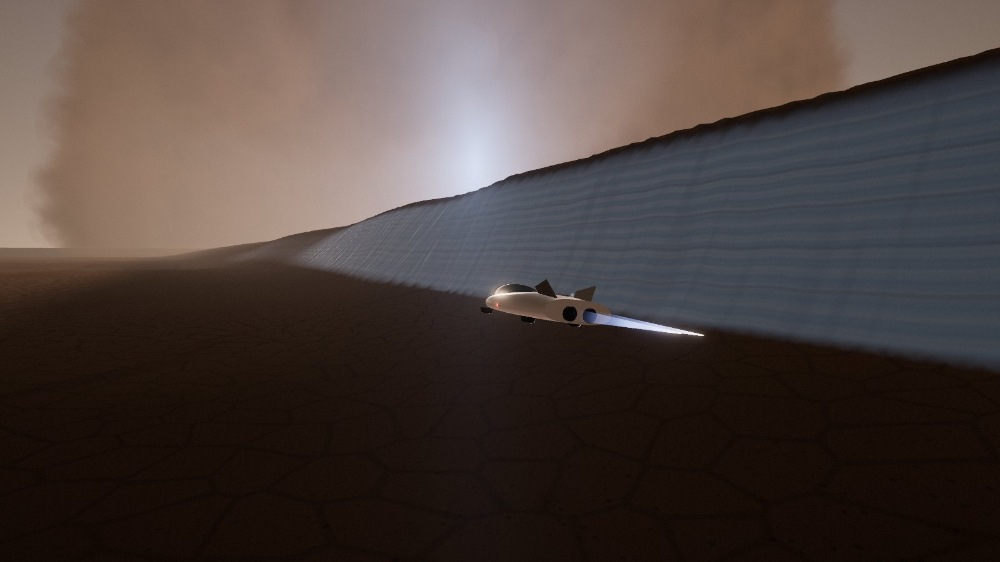
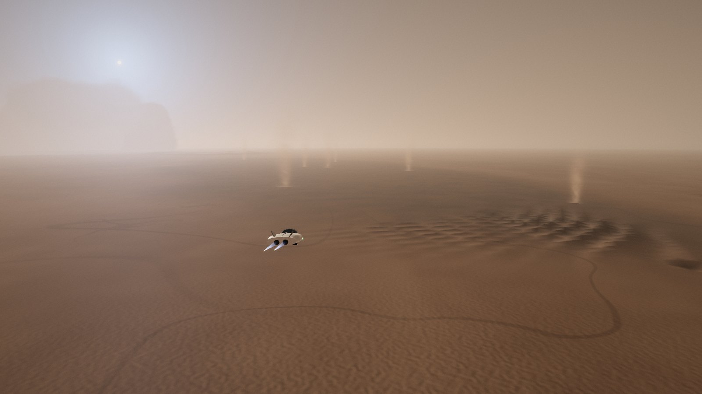
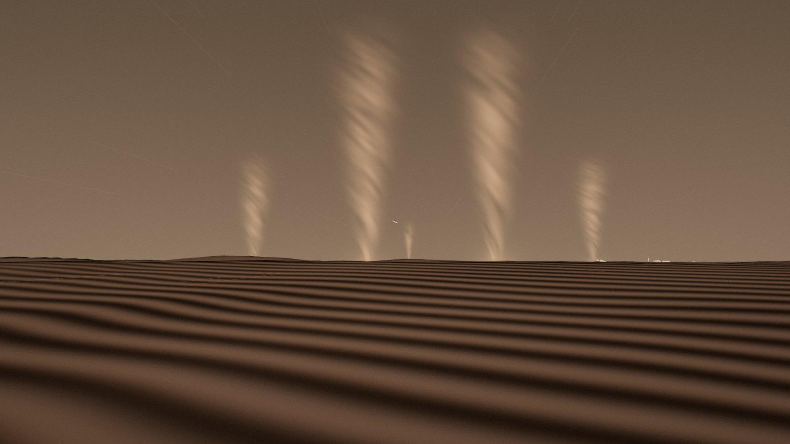
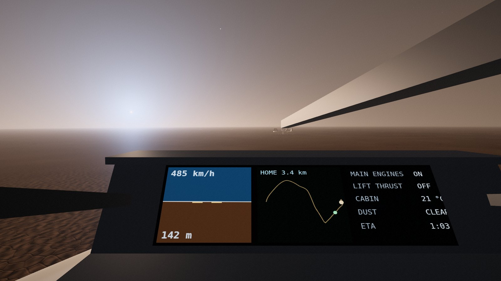
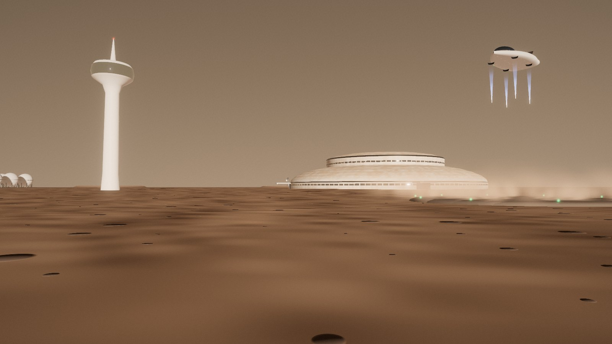
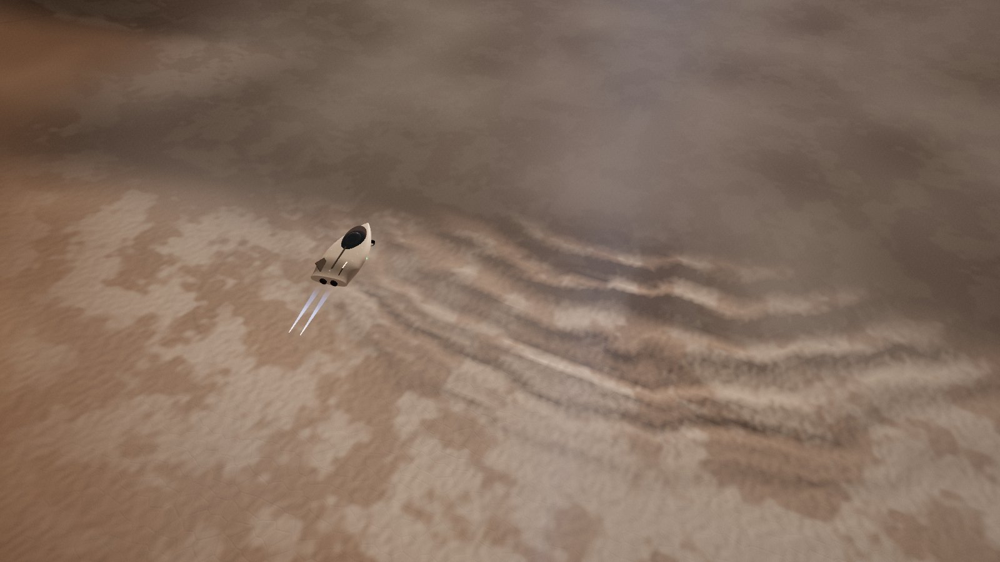
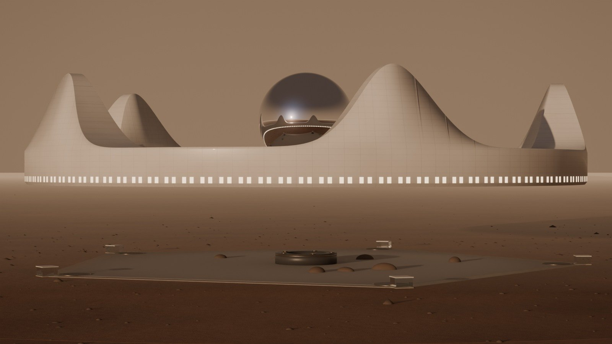

Transportation
Four ways to move, from 225 million kilometres to one step. Ships bring Jim from Earth to the spaceport. The pod flies him the 30 km home. Rovers and, later, a maglev train carry people and cargo along the ground. Inside the house, portals take him anywhere in one step.

From EarthShips every 26 months
Earth and Mars line up for an efficient trip once every 26 months. The ships leave Earth in that window, coast for about six months and land at Arcadia Spaceport; they refuel there with methane and oxygen made on Mars and fly back in the next window. Ships like SpaceX's Starship, now in testing, are being designed to do exactly this.
Arriving. The ship hits the top of the Mars atmosphere at about 7 km/s behind a heat shield, slows in the thin air, turns upright and lands on its engines on one of the three pads, 1.6 km from the terminal. A pressurised bus drives to the ship's door. At the terminal: a health check after six months in weightlessness, a rest in the lounge, then the pod home.
Leaving. Refuelling takes the whole stay: a ship needs about 1,200 tonnes of propellant, and the fuel plant makes it from ice and air (chapter 07).
| Distance Earth to Mars | 55 to 400 million km |
| Most efficient transfer | 259 days |
| Faster transfer, more fuel | about 180 days |
| Next windows | every 26 months |
| Radio delay on the way | up to 22 min |
The podA four-seat rocket that flies like a plane
Why a rocket? The air at the site is 870 Pa, less than 1% of Earth's. Rotors can barely lift anything: NASA's Ingenuity helicopter weighed 1.8 kg and spun its rotors at 2,500 rpm. Wings only work at very high speed. So the pod takes off and lands on four thrusters burning methane and oxygen, like a small version of the ships.
Why a lifting body? At 680 km/h its broad, flat-bottomed shape carries about a quarter of its weight, which saves fuel and lets it bank and turn like an aircraft. The rest is thrust. The flames are blue because methane burns clean.
Fuel. About 1.5 tonnes of propellant for the scenic flight, about 1 tonne for a direct hop. It is made at the spaceport, and pods refuel there and at the hangar in the Crown.
Safety. The pod flies itself, with Jim free to take the controls. It can land with any one thruster out, carries air for 12 hours, and turns back if the dust gets too thick. In a big storm the pods stay in their hangars and the bus takes over.
| The pod | |
|---|---|
| Seats | 4 |
| Length · width | 9.2 m · 4.5 m |
| Mass, fuelled with 4 people | about 6 t |
| Weight on Mars | 22 kN |
| Lift thrusters | 4, methane and oxygen |
| Cruise engines | 2, in the tail |
| Top speed | 680 km/h |
| Propellant, scenic flight | about 1.5 t |
| Cabin | 70 kPa, 21 °C, 12 h of air |
| Skin | white ceramic, tinted canopy |
The flight home37 km in 4 minutes 40 seconds






The route is a designed flight, not the shortest path: the straight line would be 30 km and take under 3 minutes. It crosses the Dune Sea, climbs over the rim of a 3.2 km crater, follows the Ice Cliffs, dives through a dust storm, breaks out into the blue sunset with Phobos crossing the sun, circles the Crown, passes under the ring 30 m above the garden and flies into the hangar.
On the groundThe rover road and the maglev
The rover road
30 km of rolled, heat-fused soil, 8 m wide, beside the power cable. Pressurised buses carry 12 people in shirt sleeves at 40 km/h, so the trip takes 45 minutes; you board from the building through a sealed door, and suits clip to ports on the outside. Electric cargo rovers carry containers and ice day and night. NASA's pressurised rover concepts work the same way.
The maglev · phase 2
A straight tunnel, 30 km long and 68 m deep, from the maglev station on L5 to a station under the spaceport terminal. Mars air is already a hundred times thinner than Earth's, so the train meets almost no air resistance even though the tunnel is not pumped out: the pressurised cars float on magnets at 400 km/h. Station to station takes about 6 minutes.
Containers from the ships go straight down to the cargo hall on L5. The tunnel is dug by the boring machines of L5's tunnel works, from both ends, in about two years; the soil comes out as bricks for the city.
In the houseNo lifts: portals and stairs
Portals in the Crown's five spires, the Orb, the Pentagon's corner cores and the atrium's portal column link every level in one step. Later, the homes of Arcadia City have portals too, so a visit next door takes a second. They are Jim's choice for the house: "No elevator. From crown to underground is by wormhole or any transmission device."
Stairs in the corner cores join all the Pentagon's levels, with robot carriers on spiral ramps beside them for goods. The Glide carries people round the Crown. The pods and the escape capsules connect the Crown to the ground (chapter 02).
| How | Between | Time | Carries | When |
|---|---|---|---|---|
| Ship | Earth and Arcadia Spaceport | about 6 months | people and cargo | every 26 months |
| Pod | the spaceport and the Crown's hangar | 3 to 5 min | 4 people | phase 1 |
| Bus | the spaceport and the rover hall, L5 | 45 min | 12 people | phase 1 |
| Cargo rover | the port, the ice mine and L5 | 45 min | containers, ice | phase 1 |
| Maglev | L5 and the station under the terminal | 6 min | people and containers | phase 2 |
| Glide | round the Crown, 779 m | up to 4 min | people | phase 1 |
| Portal | spires, Orb, every level; later every home | 1 step | people, goods | future technology |